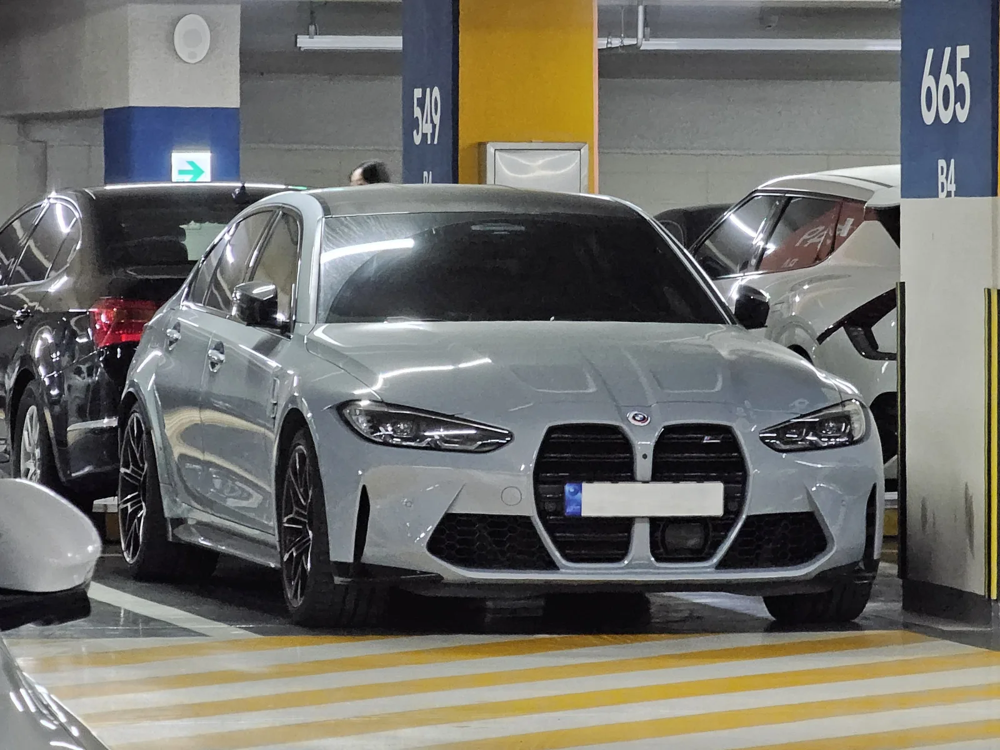

▲ BMW 노이어 클라쎄 콘셉트(자료사진). 차세대 전기 M은 이 플랫폼의 6세대를 기반으로 한다
BMW M 콘셉트 노이어 클라쎄가 다시 무대에 올랐습니다. 2026년 6월 르망 24시에서 처음 공개된 뒤, 8월 13일 북미 프리미어를 거쳐 8월 16일 페블비치 콩쿠르 델레강스 콘셉트 론에 전시됐습니다.
제원표를 보면 고성능 전기차의 조건은 갖췄습니다. 모터 4개, 100kWh 이상 배터리, 800V 전압체계. 그런데 정작 최고출력은 공개하지 않았습니다. 고성능 브랜드가 신차를 공개하면서 마력을 밝히지 않는 것은 흔한 일이 아닙니다.
대신 BMW가 앞세운 것은 '하트 오브 조이'라는 이름의 제어 컴퓨터였습니다.
1. 왜 마력을 안 밝혔나
전기 고성능차 시장에서 마력은 더 이상 차별화 요소가 아닙니다.
내연기관 시대에는 1,000마력을 내려면 엄청난 기술과 비용이 필요했습니다. 전기차는 다릅니다. 모터를 추가하고 배터리 출력을 키우면 숫자는 비교적 쉽게 올라갑니다. 실제로 1,000마력을 넘는 전기차가 이미 여럿 나와 있고, 그중에는 고성능 브랜드가 아닌 곳의 차도 있습니다.
그래서 "몇 마력이냐"로는 M이 왜 M인지 설명할 수 없게 됐습니다. 숫자를 앞세우면 더 큰 숫자를 가진 경쟁자와 비교당하고, 그 비교에서 이겨도 브랜드 정체성은 설명되지 않습니다.
BMW가 출력 대신 제어를 앞세운 배경이 여기 있습니다. M의 정체성을 "얼마나 센가"가 아니라 "어떻게 도는가"로 재정의하려는 시도입니다.

▲ 현행 M3 컴페티션. 내연기관 M의 정체성을 전기차로 어떻게 옮길지가 과제다
2. '하트 오브 조이'가 하는 일
핵심은 모터가 4개라는 사실과 그것을 하나의 컴퓨터가 통합 제어한다는 점의 결합입니다.
내연기관차는 엔진 하나에서 나온 힘을 변속기와 차동장치를 거쳐 바퀴로 나눠줍니다. 좌우 바퀴에 힘을 다르게 주려면 브레이크를 개입시키거나 전자식 차동장치를 써야 했습니다. 기계 장치를 거치는 만큼 반응이 느리고 정밀도에 한계가 있었습니다.
바퀴마다 모터가 있으면 이야기가 달라집니다. 네 바퀴에 각각 다른 힘을 즉시 줄 수 있습니다. 코너에 진입할 때 바깥쪽 바퀴를 더 밀어 차를 회전시키고, 미끄러지려는 순간 특정 바퀴만 힘을 줄이는 식의 제어가 가능해집니다. 기계식 장치로는 흉내 내기 어려운 영역입니다.
여기에 회생제동까지 바퀴별로 조절합니다. 감속할 때 어느 바퀴에서 얼마나 에너지를 회수할지 나눠서 정하면, 제동만으로도 차의 자세를 잡을 수 있습니다. BMW가 "구동과 회생제동을 실시간으로 조절한다"고 설명한 대목이 이것입니다.
즉 이 차의 성능은 모터의 힘이 아니라 그 힘을 나누는 계산 능력에서 나옵니다. 고성능 컴퓨터에 '하트 오브 조이'라는 이름을 붙인 이유입니다. 네 모터를 바퀴별로 제어하는 소프트웨어에는 M 다이내믹 퍼포먼스 컨트롤이라는 별도 명칭이 붙었습니다.
| 항목 | 기존 내연기관 M | 4모터 전기 M |
|---|---|---|
| 힘의 출처 | 엔진 1개 | 모터 4개 |
| 좌우 배분 | 차동장치·브레이크 개입 | 모터별 직접 제어 |
| 반응 속도 | 기계 지연 존재 | 즉시 |
| 회생제동 | - | 바퀴별 개별 조절 |
| 성능의 관건 | 엔진 출력 | 제어 알고리즘 |

▲ 노이어 클라쎄 기반 iX3. M 버전은 이 플랫폼의 6세대를 쓴다
3. 노이어 클라쎄 6세대라는 기반
플랫폼은 6세대 노이어 클라쎄입니다. '노이어 클라쎄(Neue Klasse)'는 독일어로 '새로운 계층'이라는 뜻으로, 1960년대 BMW를 경영 위기에서 구해낸 세단 라인의 이름이기도 합니다. 그 이름을 전동화 전환의 핵심 플랫폼에 다시 붙였다는 것 자체가 회사의 의지를 보여줍니다.
기술적으로 눈여겨볼 것은 800V 전압체계입니다. 고전압 시스템은 같은 전력을 더 낮은 전류로 전달할 수 있어 발열과 케이블 손실이 줄고, 급속충전 속도가 빨라집니다. 고성능 주행에서는 반복 가속 시 출력 유지에도 유리합니다.
이미 양산에 들어간 노이어 클라쎄 기반 모델로는 iX3가 있습니다. M 버전은 같은 뼈대 위에 모터를 늘리고 제어를 고도화하는 방식입니다.
4. 디자인 — 노란 조명과 덕테일
디자인에서도 신호가 읽힙니다.
가장 눈에 띄는 것은 노란색 조명입니다. BMW는 이를 M의 미래를 상징하는 요소로 제시했습니다. 노란 헤드램프는 전통적으로 내구 레이스에서 쓰이던 색입니다. 이 차가 르망 24시에서 처음 공개됐다는 점과 맞물립니다.
여기에 대형 덕테일 스포일러와 트리마란 형태 범퍼, 천연섬유 소재 공력 부품이 더해집니다. 마지막 항목이 흥미롭습니다. 탄소섬유 대신 천연섬유를 쓴다는 것은 경량화와 환경 부담을 함께 고려했다는 뜻으로, 전동화 시대 고성능차가 마주한 새로운 조건을 보여줍니다.
색상은 몬자 레드 메탈릭입니다. 몬자는 이탈리아의 서킷 이름입니다.

▲ 현행 M2. 내연기관 M은 당분간 병행 판매될 전망이다
5. 정리 — 아직 콘셉트다
정리하면 BMW M 노이어 클라쎄 콘셉트는 모터 4개와 800V 시스템, 100kWh 이상 배터리를 갖췄고, 출력 대신 바퀴별 제어를 전면에 세웠습니다.
다만 짚어둘 것이 있습니다. 최고출력과 가속 성능, 공차중량은 공개되지 않았습니다. 배터리 용량도 약 100kWh로 추정될 뿐 확정 수치가 아닙니다. 양산 모델은 2027년 등장할 것으로 전망되는데, 콘셉트에서 양산으로 넘어가며 사양이 조정될 여지는 남아 있습니다.
그럼에도 방향은 분명합니다. 고성능차의 경쟁 축이 엔진에서 소프트웨어로 옮겨가고 있다는 것입니다. 같은 주에 공개된 다른 슈퍼카들이 정반대 방향—자연흡기와 수동변속기—으로 간 것과 비교하면, 지금 고성능차 시장이 두 갈래로 갈라지고 있다는 게 더 선명해집니다.